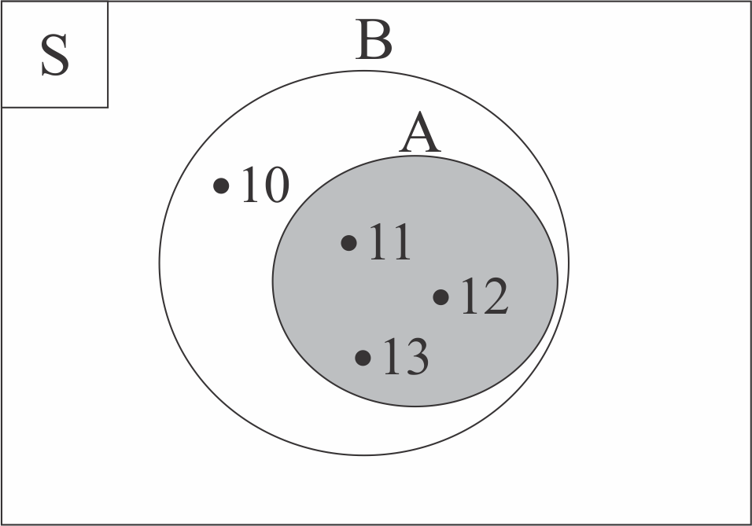

HIMPUNAN BAGIAN

Kemudian, bagaimana diagram venn dari Himpuann Bagian? Perhatikanlah Tabel 3.2.2 di bawah ini!
| Himpunan | Diagram Venn |
|---|---|
|
A = {11, 12, 13} B = {10, 11, 12, 13} Semua anggota himpunan A juga menjadi anggota himpunan B. Maka, A ⊂ B (A subset dari B) |
 |
| Himpunan A digambarkan di dalam lingkaran himpunan B. Lingkaran himpunan A diarsir untuk menandai bahwa A ⊂ B. | |
Untuk lebih lengkapnya mengenai proses membuat diagram venn dari himpunan bagian, perhatikanlah animasi interaktif di bawah ini!
 Petunjuk (klik untuk menyembunyikan petunjuk)
Petunjuk (klik untuk menyembunyikan petunjuk)- Tekan icon
 . Jika animasi belum muncul, harap tunggu sebentar ya 😄
. Jika animasi belum muncul, harap tunggu sebentar ya 😄 - Tekan tombol "Mulai" pada layar animasi interaktif untuk memulai. Perhatikanlah setiap arahan yang ditampilkan
- Praktikanlah juga pada buku catatanmu 😄

- ∈ dan ∉ digunakan untuk anggota himpunan
- ⊂ dan ⊄ digunakan untuk himpunan bagian
- Diketahui A = {1, 2, 3}, maka 2 ∈ A dan 4 ∉ A.
- Diketahui A = {1, 2, 3} dan B = {1, 2}, maka B ⊂ A dan A ⊄ B.